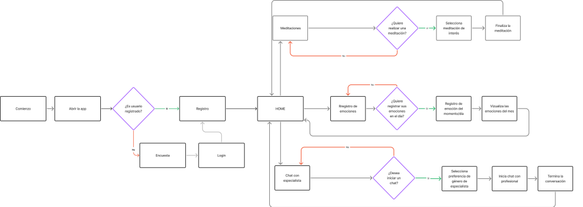

Alma

Aplicación móvil para que jóvenes puedan acceder a un acompañamiento profesional, con el objetivo de promover la salud mental.
Tipo de proyecto: Diseño de producto (UX/UI)
Rol: Diseño de producto (UX/UI)
Herramientas utilizadas: Figma, Adobe Illustrator, Adobe Photoshop
*Nota: Esto en un proyecto conceptual y grupal.
Contextualización y problema
A partir de la temática “Salud y bienestar mental” se ideo una aplicación para que los jóvenes puedan acceder a profesionales de la salud de manera sencilla y rápida. Además de añadir otras funcionalidades para ayudarlos en diferentes situaciones.
A partir de la temática “Salud y bienestar mental” se ideo una aplicación para que los jóvenes puedan acceder a profesionales de la salud de manera sencilla y rápida. Además de añadir otras funcionalidades para ayudarlos en diferentes situaciones.

El proceso
1. Empatizar
Para entender mejor las necesidades y molestias de los usuarios, se realizaron entrevistas a 8 personas. A partir de sus respuestas se definió el mapa de empatía y además el user persona.
Mapa de empatía
- Se carga emocionalmente de lo que le dicen los demás.
- Piensa que la base de un buen estado mental y emocional es la autoestima.
- “Siento que la soledad genera que entres en un círculo donde estás mal constantemente y te cuestionas si las cosas que haces están bien”
- Piensa que tener un entorno de apoyo positivo motiva y ayuda a enfrentar las dificultades de manera constructiva
- Se siente solo con frecuencia.
- Siente pereza, ansiedad, exigencia y presión la mayor parte del día.
- No entiende lo que le pasa
- Ve redes sociales, especialmente TikTok.
- No todas las personas se calman de la misma manera a como a el le funciona.
- Para permanecer en una app, lo motiva un sistema de strike como Duolingo
- Busca orientación de profesionales en salud mental a través de contenido en línea.
- Consume contenido relacionado con meditación y relajación en plataformas como YouTube, Spotify y Netflix, especialmente durante momentos de crisis.
- En su entorno se le quita importancia a los sentimientos de los demás.
- Para calmarse habla con sus amigos y familia.
- Hacer actividad física lo ayuda a tranquilizarse.
- Para calmarse necesita aislarse, ser el, cantar y bailar solo.
- Está la mayor parte de su vida realizando actividades en su computador.
- “Busco cosas de salud mental no solo por tristeza sino para conocerme y abrir nuevas facetas de mi”
- “No existe ninguna app de bienestar mental que se base en más que meditaciones”
- Consume contenidos digitales que le ayudan a manejar el estrés y la ansiedad.
- Escucha podcasts de meditación que han tenido un impacto positivo en su bienestar emocional.
- Muchos le dicen que buscar atención psicológica es para "locos"
- Escucha las opiniones de sus amigos, familia y las opiniones en las redes sociales.
- Escucha comentarios negativos sobre los sentimientos de las personas.
- Suele escuchar los problemas de los demás para apoyarlos.
User persona

User persona
Acerca de
Es un estudiante becado de la carrera de Ingeniería Informática en la UADE. Le encanta salir de fiesta con sus amigos. Vive con su padres, su hermano menor y se suele preocuparse mucho por ellos. Suele sentir mucha presión para mantener la beca.
Dolores
- Tiene que fingir estar bien para no preocupar a los demás.
- Cuando está mal emocionalmente es conflictivo con su familia y amigos.
- Siente que sus padres minimizan su estado emocional.
- No encuentra un profesional que sea adecuado y que pueda pagar.
- Le gustaría relajarse, pero encuentra difícil desconectarse de la facultad y de las preocupaciones cotidianas.
- Siente que no tiene tiempo para cuidar de su bienestar mental.
Oportunidades
- Implementar un chat con personas de confianza que le permita no solo desahogarse sino sentirse acompañado por personas que puedan entenderlo.
- Implementar una sección de trackeo de hábitos (comida, ejercicio, organización de deberes)
- Que le ofrezca prácticas de meditación y atención plena personalizadas, basadas en sus actividades.
- Artículos, podcasts, y videos que le enseñen sobre técnicas de manejo del estrés, bienestar emocional y otros tema relacionados.
2. Definir
Se elaboró el árbol del problema para definir con precisión el problema que la aplicación abordará y cómo lo resolverá. Además, se identificaron los efectos de dicho problema en los usuarios y sus causas, con el objetivo de incorporar más estrategias dentro de la aplicación.
Efectos
Problema principal
Causas
Posteriormente se realizaron los 5 whys para saber el por qué del usuario y determinar por qué nuestra app si es apta para que los jóvenes la puedan utilizar.
3. Idear
Se realizó el user flow y mapa mental para definir las funcionalidades de la aplicación junto con las posiciones de cada una.
User flow
Mapa mental
(Se adaptó a texto para una mejor lectura)
4. Prototipar
Para tener las primeras ideas de la interfaz, se realizó de manera grupal un crazy 8 en el cual se seleccionaron las pantallas que irían más acorde con cada funcionalidad.
Inicio de sesión
Home

Sección de meditaciones

Meditación en progreso

Calendario y registro emocional
Sección de profesional

Chat con profesionales

Botón de pánico
Matriz Delta Next
Hallazgos del testeo de usuarios del primer prototipo
Teníamos razón sobre:
La posición y forma del botón de ayuda llama la atención del usuario y entiende su uso.
Las opciones y funcionalidades en la sección del chat son claras.
Todo el proceso de registro de emociones está bien, los usuarios no se bloquearon en esa parte.
Los tamaños de los textos son adecuados, ya que ningún usuario se acercó a la cámara o le costó la lectura.
El color de la interfaz porque no es tan fuerte, lo que sugiere que el diseño visual es adecuado en cuanto a la paleta de colores.
Se entienden los botones que enlazan las tareas solicitadas.
Estábamos equivocados en:
La forma de presentar la flor en la parte del perfil ya que no se entiende mucho qué hace ahí.
El gráfico, ya que los usuarios lo pasaban de largo y no entendían que debían presionar el botón para ver su progreso en el último año, mes o semana.
A pesar de poner el botón de registro de emociones de primero en la jerarquía, los usuarios no lo leen porque se pierde con el fondo.
Sara menciona que el proceso de agregar emociones debe ser lo más sencillo y rápido posible, pero no está claro si se ha visto como complicado.
Mencionó que es útil el botón de pánico , pero considera que el contexto de uso del botón no estaba claro.
No sabíamos que:
Habían unos pequeños errores en la navegación del prototipado pues en ciertas partes donde no debía te llevaba a la sección de reproducir meditación.
Sara mencionó que la navegación era un área que debíamos de mejorar.
La manera en la que se representa qué día es y en qué día está ubicado el usuario no se entiende del todo.
Algunos usuarios preferían frases de aliento concisas y breves. Esto es importante porque puede mejorar la experiencia de la app.
No sabíamos que algunos usuarios no entienden el ícono de la carita y requieren un diseño más claro o intuitivo.
La ruleta de emociones no era tan fluida.
Queremos aprender más sobre:
Cómo hacer para que los usuarios se interesen más por la lectura de cada sección en las meditaciones.
Cómo explicar y presentar mejor el concepto del tulipán y como se puede utilizar para un seguimiento emocional efectivo.
Cómo integrar mejor el gráfico del progreso para que sea mas fácil de entender y los usuarios sepan que pueden interactuar con el mismo.
Saber más sobre las preferencias del usuario en cuanto a la organización del calendario y si les gustaría tener más personalización en la forma en la que actúa con él.
¿Qué íconos o elementos visuales son más comprensibles para los usuarios?
Sobre cómo simplificar la explicación y hacerla más intuitiva, posiblemente con ejemplos visuales
Cómo incorporar aún más la funcionalidad del Tulipán, donde esta afecte aún más al usuario de manera positiva.
Nuevas ideas:
Añadir en el on-boarding una sección explicativa de cómo funciona el Tulipán.
Resaltar el acceso al registro de emociones con colores más llamativos.
Agregar un botón que te lleve al registro de emociones debajo del gráfico de tu progreso.
Implementar las pantallas para añadir o cambiar al contacto de emergencia.
Sumar un texto como por ejemplo: “aun no registraste tu emoción del día” (arriba del boton de añadir emoción).
Añadir en la parte posterior del home no solo el Tulipán sino más información del mismo.
Quizá incluir un tutorial o una sección sobre cómo el seguimiento del tulipán puede ayudar.
Implementar recordatorios con frases cortas y breves de aliento y motivación y que los usuarios puedan recibirlos por la mañana o según sus preferencias.
Revisar y simplificar la navegación para que los botones y opciones más importantes sean de fácil acceso.
Posterior a toda la investigación se diseñó el prototipo final de alta fidelidad, mostrando las funcionalidades dentro de la app y la estética de la misma.
Para finalizar
El bienestar mental es un tema muy importante en la actualidad y el hecho de crear herramientas que faciliten su acceso es muy beneficioso para los usuarios. Alma es un primer acercamiento de lo que puede llegar a ser una gran aplicación con muchas funciones y beneficios para las personas por lo que es importante seguir explorando y creando o facilitando la experiencia para sacarle el mayor provecho a Alma.